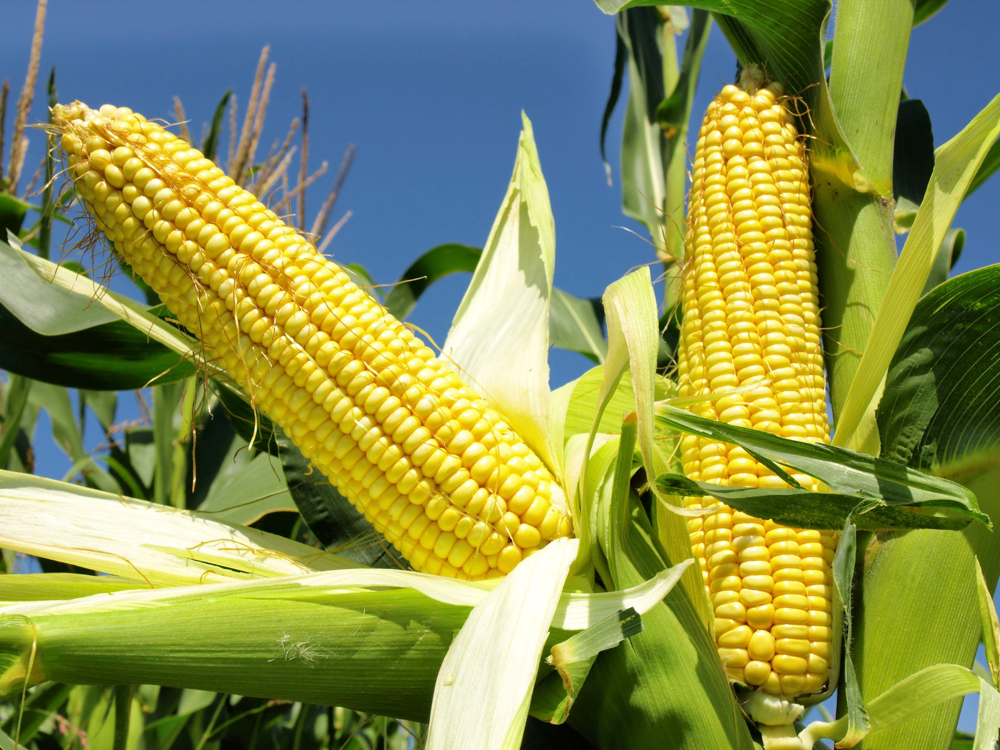
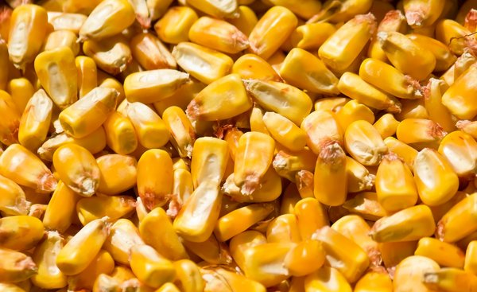

CORN(MAIZE)
corn, (Zea mays), also called Indian corn or maize, cereal plant of the grass family (Poaceae) and its edible grain. The domesticated crop originated in the Americas and is one of the most widely distributed of the world’s food crops. Corn is used as livestock feed, as human food, as biofuel, and as raw material in industry.
Domestication and history:-
Corn was first domesticated by native peoples in southern Mexico about 10,000 years ago. Modern corn is believed to have been derived from the Balsas teosinte (Zea mays parviglumis), a wild grass. Its culture had spread as far north as southern Maine by the time of European settlement of North America, and Native Americans taught European colonists to grow the indigenous grains. Since its introduction into Europe by Christopher Columbus and other explorers and colonizers, corn has spread to all areas of the world suitable to its cultivation. It is grown from 58° N latitude in Canada and Russia to 40° S latitude in South America, with a corn crop maturing somewhere in the world nearly every month of the year. It is the most important crop in the United States and is a staple food in many places.
Physical description:-
Corn was first domesticated by native peoples in southern Mexico about 10,000 years ago. Modern corn is believed to have been derived from the Balsas teosinte (Zea mays parviglumis), a wild grass. Its culture had spread as far north as southern Maine by the time of European settlement of North America, and Native Americans taught European colonists to grow the indigenous grains. Since its introduction into Europe by Christopher Columbus and other explorers and colonizers, corn has spread to all areas of the world suitable to its cultivation. It is grown from 58° N latitude in Canada and Russia to 40° S latitude in South America, with a corn crop maturing somewhere in the world nearly every month of the year. It is the most important crop in the United States and is a staple food in many places.
Commercial classifications, based mainly on kernel texture, include dent corn, flint corn, flour corn, sweet corn, and popcorn. Dent corn, primarily grown as animal feed and for food manufacturing, is characterized by a depression in the crown of the kernel caused by unequal drying of the hard and soft starch making up the kernel. Flint corn, containing little soft starch, has no depression; it is used for decoration and is eaten as hominy in the Americas. Flour corn, composed largely of soft starch, has soft, mealy, easily ground kernels and is an important source of corn flour. Sweet corn, commonly sold fresh, frozen, or canned as a vegetable, has wrinkled translucent seeds; the plant sugar is not converted to starch as in other types. Popcorn, an extreme type of flint corn characterized by small hard kernels, is devoid of soft starch, and heating causes the moisture in the cells to expand, making the kernels explode. Improvements in corn have resulted from hybridization, based on crossbreeding of superior inbred strains.
Many industrial and feedstock varieties of corn are genetically modified organisms (GMOs) engineered for resistance to the herbicide glyphosate or to produce proteins from Bacillus thuringiensis (Bt) to kill specific insect pests. In addition, some strains have been genetically engineered for greater drought tolerance and to increase their nutritional value. Most of the corn grown in the United States is GMO, which may reduce the need for herbicides and insecticides.
Uses and products
Corn is one of the world’s most productive and dominant crops. It is grown extensively as food for both humans and livestock, as a biofuel, and as a crude material in industry.